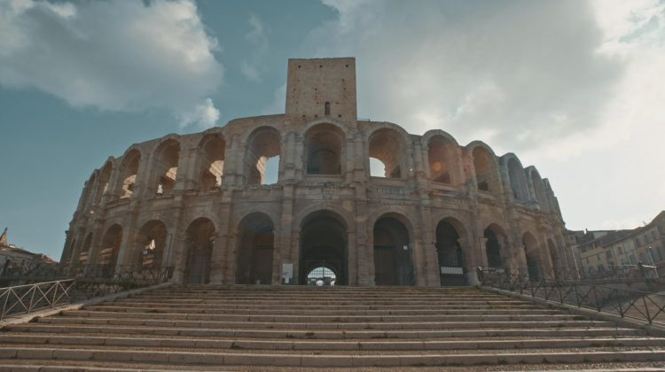

Año 50 a. de C., Julio César reina en la Galia después de una conquista que no fue simplemente militar o política. Roma quería difundir su grandeza llevando la civilización a los bárbaros derrotados que ahora formaban parte del Imperio. El nuevo territorio de Roma se transformó a través de enormes proyectos de construcción que incluían acueductos, calzadas, termas, anfiteatros y estadios. Canal HISTORIA estrena en exclusiva "Megaestructuras romanas", miniserie que nos traslada a Lyon, Arlés y París, para explorar tres ciudades que hoy albergan vestigios de esta industriosa civilización. Mediante el uso de CGI, imágenes de archivo, tomas aéreas y testimonios de expertos, desvelaremos los secretos de estas maravillas de la ingeniería romana y mostraremos el legado de uno de los imperios más poderosos de la Historia.
